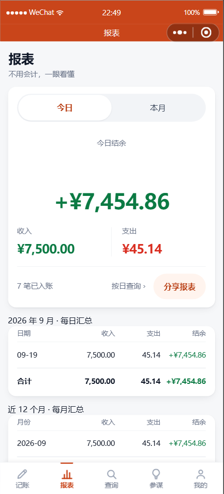
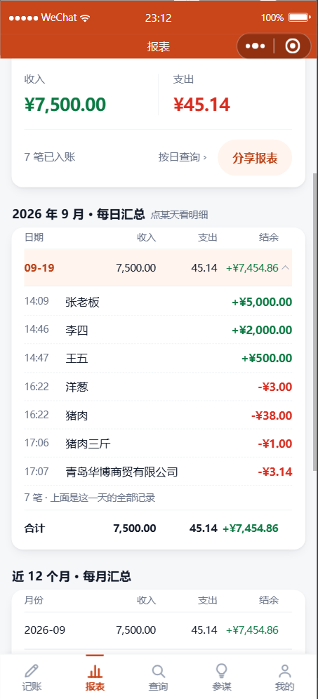

点每日汇总表，看当天明细
2026-09-19
一、怎么用
每日汇总表平时只有数字（日期 / 收入 / 支出 / 结余），跟你要的"简洁"一致。
点某一天那一行，当天每一笔就展开在那行下面；再点一下收起来。
展开的那一行会变橙色、右边的小三角翻过来 —— 一眼就知道下面那串是哪天的。
明细按时间从早到晚排（看一天的账是从早读到晚），末尾写清「N 笔 · 上面是这一天的全部记录」。

默认：只有数字
表格里不出现任何明细，
页面照样简洁。

点一下某天：明细展开
7 笔逐条列出，收绿支红，
末尾写明这是全部记录。
二、一个刻意的取舍：明细不跟着表格一起加载
本月光是记账日就有几十天、几百笔。如果进页面就把所有明细全拉下来，
又慢又白花流量，而你多数时候只想看"哪天多哪天少"。
所以：汇总先给，明细按需点开。点开过的天会告诉你"这是在读明细"，
读不到时明确说"没读到，点这里重试" —— 而不是让你以为这天真的没账。
三、顺手挖出一串老问题（这个更像收获）
🐛 我给自检工具补了一个盲区，一次扫出 7 个类、21 处引用
这次写样式时发现：我在报表页用了一个区块头样式，但
它只定义在采购页和记账页里 ——
也就是说报表页的那几个小标题
一直是没样式的裸文字。
更关键的是：
我的自检工具是绿的。因为小程序里样式是
按页面隔离的，
而工具却把所有样式揉在一起查，所以"在别的页面定义过"也被它当成了有样式。
改成按页面各自的作用域判定之后，一次报出 21 处，其中一串
都是早就存在的问题：
| 东西 | 实际状况 | 后果 |
|---|
| 输入框里的提示字颜色 |
4 个页面在用，只有 1 个页面有定义 |
另外 3 个页面的提示字颜色一直是失效的（这就是为什么它们看着灰得不太一样） |
| 区块头小标题 |
5 个页面在用，有 4 份互不相同的副本 |
报表页的区块头没样式；4 份副本字号还各不相同 |
| 长文本截断 |
3 个页面在用，2 份副本 |
分享出去的报表页长文本不截断，会顶破排版 |
| 往来卡片 |
2 个页面在用，只有 1 个页面有定义 |
同一个名字在两个页面是两个意思（一个横排一个竖排），
现在只因另一页没定义才侥幸没坏 —— 哪天补上定义就会突然错乱 |
判据很简单：一个东西被 2 个以上页面用到，它就该住在公共样式里。
已经全部收拾干净，3 个页面的输入框提示字颜色也恢复正常了。
四、验证
| 项目 | 结果 |
|---|
| 点某天 → 展开当天明细（7 笔，时间正序） | 通过 |
| 默认不展开、不预加载明细 | 通过 |
| 自检工具的作用域判定（改了逻辑，专门做了回归样本） | 9 / 9 |
| 自检工具全项目扫描 | 21 处问题 → 0 处 |
| 回归：日历 25/25 · 分组汇总 15/15 · 分享 33/33 · 语音归类 54/54 · 分类统计 13/13 | 全过 |
| 静态自检 / WXML 配对 / 指令 / 样式 / 控制台 | 全过 · 无报错 |
改了校验工具的判定逻辑，就必须拿故意写错的样本回归一次 —— 否则不知道它到底还灵不灵。
这次做了 9 项回归（全局能用 / 跨页使用必须报 / 不互相泄漏 / 组合选择器要认 /
@import 要跟 / 事件处理器与图片照旧能查）。
它第一次跑就抓出我自己夹具写错的一处。测试失败时先怀疑测试本身。